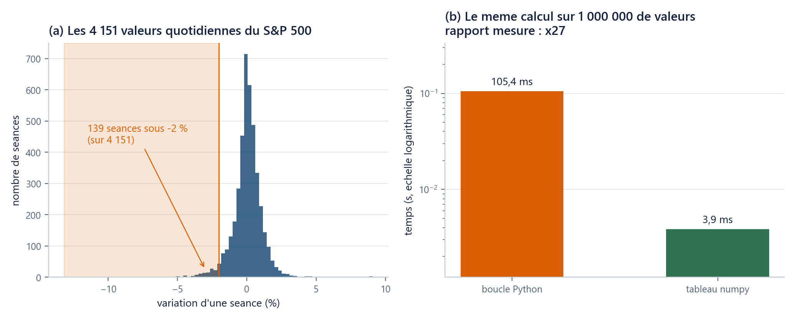

Où suis-je ? unité 6 sur 8
Les unités du chapitre
- 01Six lignes suffisent pour voir…15 min
- 02Un nom retient un résultat…20 min
- 03Une liste range des prix dans l'ordre20 min
- 04Une boucle parcourt25 min
- 05Une fonction nomme un calcul20 min
- 06Un tableau numpy remplace la boucle25 min
- 07Votre machine devient l'ordinateur du cours30 min
- 08Huit fiches d'une page suffisent…45 min
Dans cette unité
Outils : Python de zéro, sans rien installer
Un tableau numpy remplace la boucle : 10 000 valeurs pour le prix d’une
Sur un tableau, une opération écrite une fois s'applique à toutes les cases : plus court à écrire, deux ordres de grandeur plus rapide.
Durée 25 min · Prérequis u01 à u05 · Idée unique : sur un tableau numpy, une opération écrite une fois s'applique à toutes les cases : plus court à écrire, et deux ordres de grandeur plus rapide qu'une boucle.
La question
Le fil rouge contient 4 151 variations quotidiennes du S&P 500, une par séance depuis le 5 janvier 2010. Une question de gestion des risques, posée telle quelle sur un desk : combien de ces séances sont passées sous le seuil de −2 % en une seule journée ?
Avec u04, la réponse s'écrit en cinq lignes qui tournent 4 151 fois. Le problème est ailleurs : à partir du ch04, le cours manipulera des tableaux de cent mille à dix millions de nombres, où la même boucle prendrait des minutes. Il faut une écriture qui vaille aussi bien pour 4 151 valeurs que pour 10 000 000.
On essaie d’abord
Écrivez deux nombres avant de lire la suite : combien de séances sous −2 % parmi les 4 151, et de combien a reculé la pire d'entre elles.
Les réponses sont 139 séances, soit 3,35 % du total (environ une séance par mois et demi) et une pire séance le 16 mars 2020, à −0,1277 sur l'échelle du fichier, soit une baisse de 11,98 %. La plupart des lecteurs sous-estiment les deux. Retenez la seconde : une seule séance a coûté au S&P 500 près du huitième de sa valeur.
Deux précisions. La colonne employée ici n'est pas tout à fait le rendement d'u02 : sur son échelle, le seuil -0.02 vaut une baisse de 1,98 %, d'où 139 séances, contre 138 si l'on exige 2,00 % pleins. Et ne comparez pas ce −11,98 % d'une journée à la pire année du portefeuille (−15,28 %, u04) : ni le même actif, ni la même durée, ni la même façon de compter. Refuser une comparaison est le premier réflexe du métier.
L’idée
Ce que charger_fil_rouge() rend déjà
import numpy as np
from mcdp_utils import charger_fil_rouge
fil = charger_fil_rouge()
rendements = fil["rendements_log"]["SP500"]
print(type(rendements).__name__, rendements.shape) # ndarray (4151,)
L'objet rangé sous la clé "SP500" n'est pas une liste d'u03 : c'est un tableau numpy (ndarray), une suite de nombres tous du même type, rangés côte à côte en mémoire. shape en donne les dimensions : (4151,). La virgule seule signifie « un seul axe, 4 151 cases » : c'est ainsi que numpy distingue une suite d'une grille.
Les valeurs de rendements_log sont une variante du rendement d'u02 ; laquelle, et pourquoi le cours en garde deux, c'est ch01 u01. Notez qu'il y a autant de variations que de séances, et non une de moins : la première se calcule contre la clôture du 4 janvier 2010, la veille du panel. Refaites-les depuis les seuls 4 151 prix avec la formule d'u02, vous en obtiendrez 4 150, sur l'autre échelle, et un compte de 138.
Une opération écrite une fois, appliquée à toutes les cases
print(rendements.mean()) # 0.0004622435235084024
print(rendements.std(ddof=1)) # 0.010902629250137815 -- ddof=1 : voir piege (ii)
print(rendements.std(ddof=1) * np.sqrt(252)) # 0.1730738737956197
print((rendements * 100.0)[:3]) # [0.31108326 0.05453718 0.39932177]
rendements * 100.0 ne multiplie pas un nombre : il multiplie les 4 151, et rend un tableau neuf de même forme. C'est cela, une opération élément par élément. mean() et std() font l'inverse : elles écrasent les 4 151 cases en un seul nombre. Le troisième affichage, 0,1731, est simplement un écart-type multiplié par \sqrt{252} : ce qu'il mesure, et pourquoi cette racine, c'est le ch01 u02.
Compter sans boucle : le masque booléen
sous_deux = rendements < -0.02
print(sous_deux.shape, sous_deux[:4]) # (4151,) [False False False False]
print(sous_deux.sum()) # 139
print(rendements.min()) # -0.127652197567
print(fil["dates"][rendements.argmin()]) # 2020-03-16
rendements < -0.02 compare chaque case à −0,02 et rend un tableau de même forme rempli de True et de False : un masque booléen. Pourquoi une somme donne-t-elle un compte ? Parce que True vaut 1 et False vaut 0 : additionner les vrais, c'est les compter. argmin() rend la position du minimum, qui sert à lire la date dans fil["dates"]. Cinq lignes, aucune boucle, et la réponse aux deux questions du début.
Le même geste sur la fonction d’u05
def payoff_call_vec(S, K):
"""Vectorised version of payoff_call: S may be an array of any shape."""
return np.maximum(S - K, 0.0)
prix = np.linspace(5000.0, 11000.0, 10000)
gains = payoff_call_vec(prix, 7718.60)
print(gains.shape, gains.max()) # (10000,) 3281.3999999999996
np.maximum est la version « toutes les cases » du max d'u05 : il compare case par case S - K à 0 et rend un tableau. Au passage, S - K mêle un tableau de 10 000 cases et un nombre seul : numpy étend le nombre à toutes les cases, ce qu'on appelle la diffusion (broadcasting). La figure d'u05 demandait une boucle sur 200 prix ; celle-ci calcule 10 000 gains en une ligne, et rend toujours 781,40 sur un nombre seul.
Mesurer, jamais réciter
import time
tableau = np.linspace(5000.0, 11000.0, 1_000_000) # le _ est un separateur de lisibilite
liste = tableau.tolist()
debut = time.perf_counter()
total = 0.0
for x in liste:
total += max(x - 7718.60, 0.0)
duree_boucle = time.perf_counter() - debut
debut = time.perf_counter()
total_vec = np.maximum(tableau - 7718.60, 0.0).sum()
duree_vecteur = time.perf_counter() - debut
print(round(duree_boucle, 4), round(duree_vecteur, 5), round(duree_boucle / duree_vecteur))
Sur la machine de référence, dix exécutions donnent 0,10 à 0,18 s contre 0,003 à 0,005 s : le rapport n'est pas un nombre mais une fourchette, entre 20 et 45, et il change à chaque lancement. Chez vous ce sera autre chose : QuantEcon publie ×33 sur un calcul voisin. Le facteur se mesure, il ne se récite pas. Remplacer une boucle par une opération de tableau s'appelle vectoriser ; la mesure qui l'accompagne est un chronométrage.
Deux causes, et pas « numpy est magique ». À chaque tour de boucle, Python vérifie de quel type est x avant de savoir quoi faire de + ; le tableau, lui, est déclaré une fois float64. Et les cases d'un tableau sont contiguës en mémoire, là où une liste est une suite d'adresses menant chacune ailleurs.

Les quinze primitives du cours. Jusqu'au ch05, vous n'écrirez rien d'autre que celles-ci :
np.array·.shape· indexation et tranche · masque booléen ·np.maximum·np.mean·np.std·np.percentile·np.exp/np.log·np.cumsum·np.sqrt·np.random.default_rng(SEED)·rng.standard_normal·rng.choice·rng.spawn; plusplt.subplotsetax.plot/ax.hist.Deux écritures pour la même chose :
np.mean(rendements)etrendements.mean()font le même calcul (u03, « le point »). Les fonctions de confort qui fabriquent un jeu d'essai ou lisent un résultat, soitnp.linspace,.argmin,.tolistici, quelques autres dans le filet u08, apparaissent dans du code fourni et ne sont pas à mémoriser. Tout le reste s'appelle, ne s'écrit pas. Les trois dernières primitives servent au ch02.Une graine, un générateur.
np.random.default_rng(SEED)fabrique l'objet qui tire les nombres au sort, et la même graine redonne la même suite sur n'importe quelle machine. La règle complète du cours, à savoir unSEED, unrngcréé une fois et passé en argument, toute répétition dérivée parrng.spawn(k), et jamaisdefault_rng(SEED + i), motif que la documentation de NumPy assortit d'un « UNSAFE! Do not do this! » et dont l'erreur ne lève aucun message, se met en pratique dans la partie F du TP, et sert à partir du ch02.
Les pièges
(i) Une tranche de tableau est une vue, pas une copie
a = np.array([10.0, 2.0, 3.0, 4.0, 5.0, 6.0])
b = a[3:]
b[0] = 40.0
print(a) # [10. 2. 3. 40. 5. 6.] <- a a change
liste = [10.0, 2.0, 3.0, 4.0, 5.0, 6.0]
m = liste[3:]
m[0] = 40.0
print(liste) # [10.0, 2.0, 3.0, 4.0, 5.0, 6.0] <- la liste, elle, est intacte
Sur une liste, une tranche fabrique une nouvelle liste (u03). Sur un tableau, a[3:] est une vue : un second nom sur la même mémoire, comme l'alias copie = prix d'u03, mais ici il suffit de découper. Parade identique : b = a[3:].copy().
Une nuance utile : un masque booléen, lui, fabrique une copie, et a[a > 3] se modifie sans danger, a[3:] non. Le symptôme n'est jamais un message : c'est un résultat qui change quand on réexécute la même cellule.
(ii) ddof, l’écart-type qui n’est pas le même selon la bibliothèque
echantillon = np.random.default_rng(42).standard_normal(20)
print(echantillon.std()) # 0.8481444... (ddof=0, le defaut de numpy)
print(echantillon.std(ddof=1)) # 0.8701778... (la convention du cours)
Deux nombres pour la même quantité, 2,60 % d'écart sur 20 valeurs. np.std divise par N (ddof=0) ; pandas, et tout le reste de ce cours, par N-1 (ddof=1). Sur un million de valeurs l'écart tombe à 0,00005 %, donc invisible, donc jamais détecté, alors qu'il fausse tous les petits échantillons. Écrivez ddof=1 explicitement, partout.
Ces deux pièges ont un point commun avec celui d'u05 : aucun ne lève de message. Sur les dix erreurs classiques que ce cours recense, cinq sont muettes, d'où les assert d'u05.
Vérifiez-vous
(a) rendements.shape affiche (4151,). Que dit la virgule seule ?
Réponse
(b) Pourquoi (rendements < -0.02).sum() compte-t-il des séances, alors que sum additionne ?
Réponse
(c) (rétrospective) Vous réexécutez deux fois la même cellule et obtenez deux nombres différents. Quelle est votre première hypothèse ?
Réponse
(d) (rétrospective) En u03, copie = prix puis copie[0] = 0.0 abîmait prix, et prix.copy() réparait. Qu'est-ce qui change ici, et qu'est-ce qui ne change pas ?
Réponse
(e) (rétrospective) Votre voisin annonce « numpy va cent fois plus vite ». Vous mesurez 27. Lequel de vous deux a raison ?
Réponse
Ce que vous savez faire maintenant
- Reconnaître un tableau numpy, lire sa
shape, lui appliquer une opération élément par élément, le résumer parmean/std(ddof=1). - Compter et filtrer par masque booléen, remplacer une boucle par une opération de tableau, puis mesurer le gain au chronomètre.
- Éviter les deux fautes muettes : la vue prise pour une copie, et le
ddoflaissé au défaut.
Ce que ce chapitre ne vous a pas appris. pandas range des tableaux avec des étiquettes de dates et de colonnes ; ses read_csv, .loc et .groupby sont ce que vous croiserez dans n'importe quel code de marché. Le tronc commun s'en passe : charger_fil_rouge() rend des tableaux numpy nus, et c'est ce qu'il faut pour voir ce qui se passe. Sujet traité dans cours_v2/avance/, hors examen.
Unité suivante. Vous savez calculer sur des milliers de valeurs ; il manque les valeurs, c'est-à-dire ce que sont réellement un prix, un rendement, un risque et un droit d'acheter. Le ch01 va les chercher, sur les mêmes 4 151 séances. (Pour quitter d'abord le navigateur, u07 est écrite pour cela, obligatoire avant le ch05.)